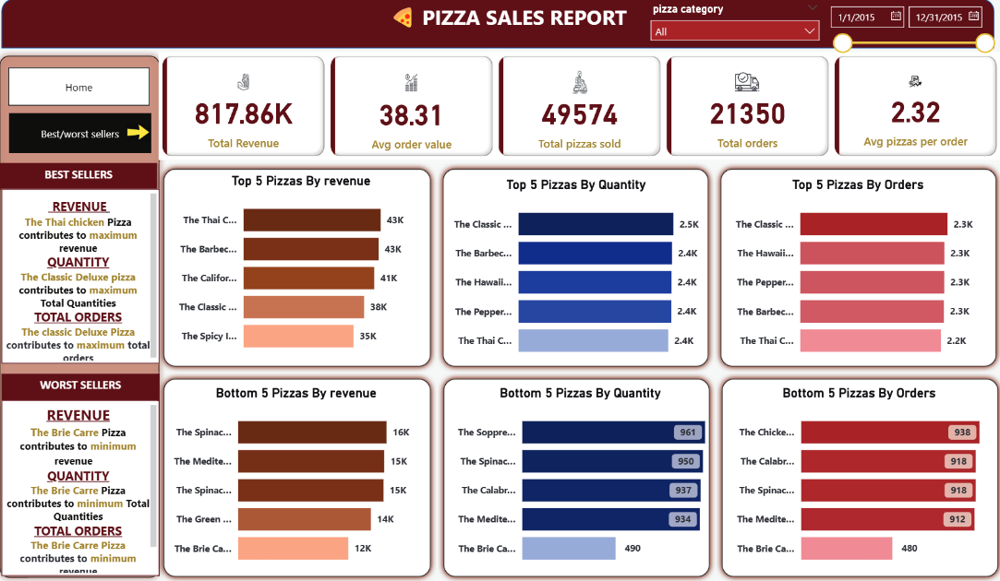
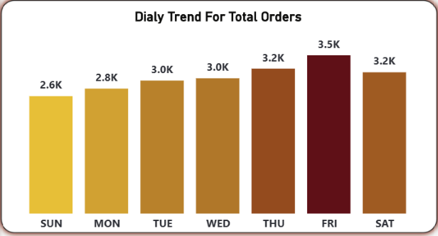
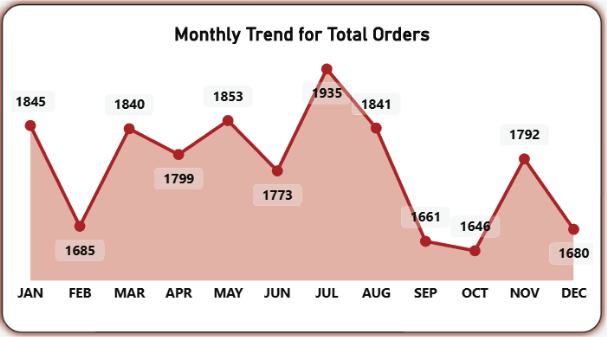
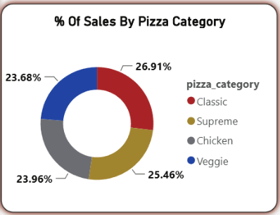
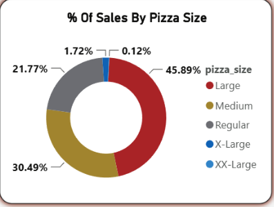
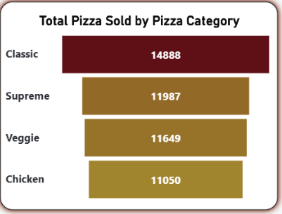
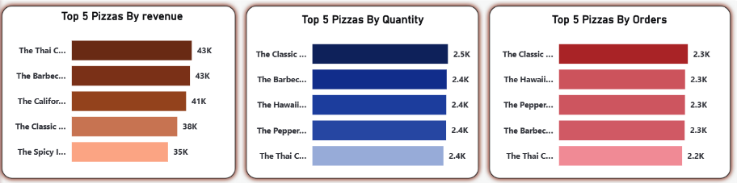
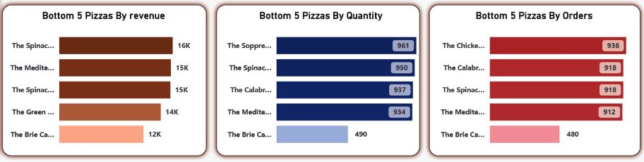

Pizza Sales Analysis 🍕
Description
This project uses Power BI to analyze and visualize pizza sales data,
helping uncover key business insights related to revenue, order patterns,
customer preferences, and product performance.


Project Files
- pizza_sql.sql – SQL script used to create and populate database tables.
- pizza_sales_excel_file.csv – Raw sales data used for analysis.
Problem Statement
The objective of this project is to analyze pizza sales data and identify key performance indicators (KPIs)
and trends that provide insights into overall business performance, customer behavior, and product demand.
Key Performance Indicators (KPIs)
- Total Revenue: Sum of the total price of all pizza orders.
- Average Order Value: Total revenue divided by the total number of orders.
- Total Pizzas Sold: Sum of quantities of all pizzas sold.
- Total Orders: Total number of orders placed.
- Average Pizzas per Order: Total pizzas sold divided by total orders.
Charts & Visual Requirements
-
Daily Trend for Total Orders:
Bar chart showing daily order volume trends to identify fluctuations and patterns.

-
Monthly Trend for Total Orders:
Line chart illustrating order trends over time to highlight seasonal patterns.

-
Percentage of Sales by Pizza Category:
Pie chart representing sales distribution across different pizza categories.

-
Percentage of Sales by Pizza Size:
Pie chart showing customer preference for different pizza sizes.

-
Total Pizzas Sold by Category:
Funnel chart comparing sales performance across pizza categories.

-
Top 5 Best-Selling Pizzas:
Bar chart highlighting the top 5 pizzas based on revenue, total quantity sold, and total orders.

-
Bottom 5 Worst-Selling Pizzas:
Bar chart identifying underperforming pizzas based on revenue, quantity sold, and total orders.

Tools & Technologies
- Power BI
- SQL
- Excel / CSV
- Data Modeling & DAX
- Data Visualization
Conclusion
This dashboard provides a comprehensive overview of pizza sales performance,
helping stakeholders identify revenue drivers, customer preferences, and
underperforming products. The insights derived from this analysis support
data-driven decisions for improving sales strategy and operational efficiency.
Project Links
View GitHub Repository
← Back to Portfolio